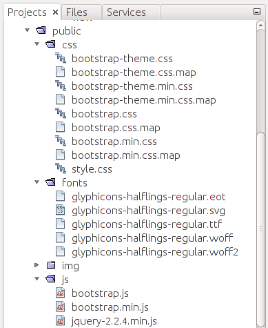

Overview of Bootstrap Files
The source code of Bootstrap framework's components is spread across many CSS files. It is known that downloading multiple small files is typically slower than downloading a single large file. For this reason, Bootstrap CSS stylesheets are "concatenated" with the special tool and distributed in a form of a single file named bootstrap.css.
However, this bootstrap.css file has a disadvantage: it contains many characters (white space characters, new line characters, comments, etc.) unneeded for code execution, wasting network bandwidth when downloading the file, thus increasing page load time. To fix this problem, the minification is used.
The minification is the process of removing all unnecessary characters from the source code without changing its functionality. The minified Bootstrap file is called bootstrap.min.css.
It is generally recommended to use the minified file, especially in production environment, because it reduces the page load time. However, if you plan to dig into Bootstrap code to understand how it works, you better use the usual (non-minified) file, or even download the original source files (not concatenated ones).
Let's look in more details at the files stored inside the APP_DIR/public directory and its subdirectories (figure C.1).
 Figure C.1. Structure of the APP_DIR/public directory
The css directory contains the CSS stylesheets:
The bootstrap.css and bootstrap.min.css files are the usual and minified versions of Bootstrap, respectively.
The bootstrap-theme.css is the optional Bootstrap theme file for a "visually enhanced experience". The bootstrap-theme.min.css is its minified version.
The style.css file is the stylesheet that can be used and extended by you to define your own CSS rules which will be applied on top of Bootstrap rules. This way you can customize the appearance of your web application.
You may also notice various files with .map extension, which is the MAP 50 files that can be used for debugging the CSS code.
50) After the concatenation and minification, the CSS code is difficult to read and debug. A MAP file (source map) allows to restore the minified file back to its usual state.
The fonts directory contains several files (e.g. glyphicons-halflings-regular.svg) needed by Bootstrap for rendering icons. These icons (also called Glyphicons) can be used to enhance the appearance of the buttons and dropdown menus.
The APP_DIR/public/js subdirectory contains JavaScript extensions of the Bootstrap framework. They are implemented as jQuery plugins:
The bootstrap.js is the file containing the JavaScript code of the Bootstrap extensions. The bootstrap.min.js file is its minified version.
Because Bootstrap extensions are implemented as jQuery plugins, they require the latest version of jQuery library to be present. Thus, the js directory includes the jQuery library file jquery-2.2.4.min.js.